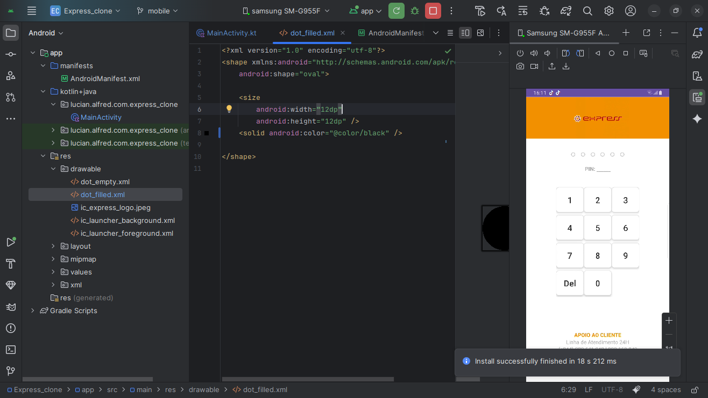
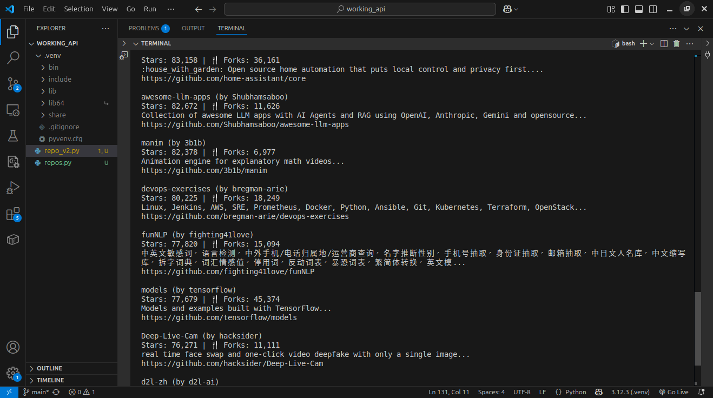
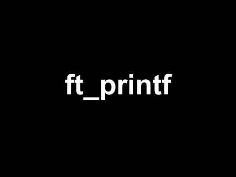
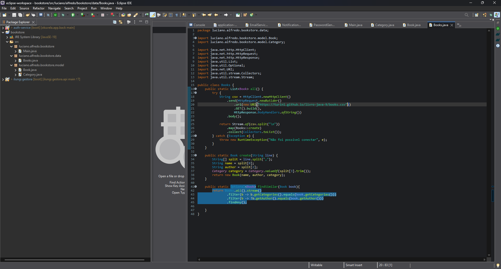

Hi, I'm Luciano. A developer passionate about creating elegant solutions to complex problems.

A functional and educational clone of Multicaixa Express, focusing on demonstrating skills in mobile development, APIs, and frontend-backend integration.

A Python application that consumes the GitHub API to visualize repositories with the most stars, facilitating the discovery of popular projects.
Implementation in C of a function that reads line by line from a file descriptor, exploring memory manipulation and low-level buffering.

Recreation of the famous printf function from the C standard library, covering variadic functions and support for multiple formatting types.
My own library of standard C functions, recreating essential functions like string manipulation, memory, and linked lists.

A book management system that consumes external APIs, utilizing native Java 11+ HttpClient, Stream API, and CSV data processing.